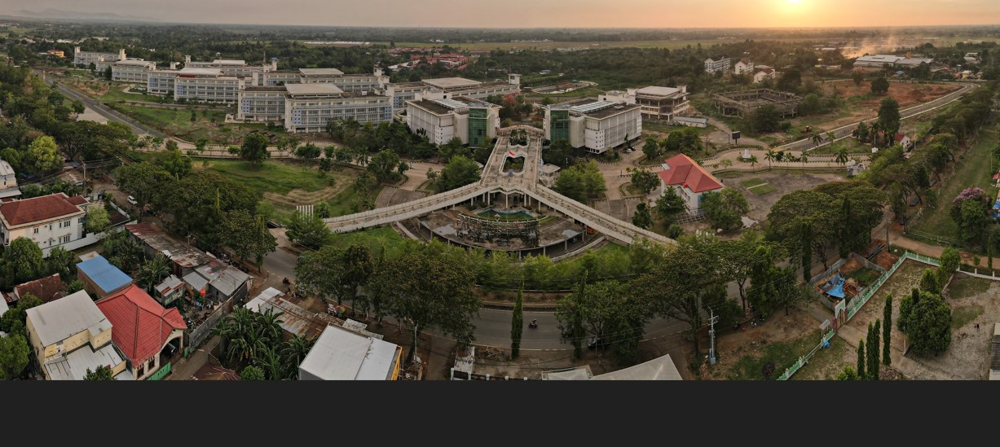

Beranda
Profil
Sejarah Singkat
Visi, Misi dan Sasaran
Manajemen
Struktur Organisasi
Master Plan
Peta Kampus
Mediatek
Akademik
Departemen
Program Magister
Program Doktor
Program Profesi
Akreditasi
Kalender Akadmik
Sumber Daya
Guru Besar
Tenaga Kependidikan
Sarana dan Prasarana
Perpustakaan
Kemahasiswaan
UPT Asrama (RAMTEK)
Pengembangan Karakter Mahasiswa
Peningkatan Prestasi Mahasiswa
Mahasiswa Inbound dan Outbound
Alumni
Aturan Kemahasiswaan
Pengumuman
Riset dan Inovasi
Daftar Penelitian LBE Tahun 2020
Hasil Inovasi
Hak Kekayaan Intelektual
Kemitraan
Kerjasama Dalam Negeri
Kerjasama Luar Negeri
GPM-PR
Profil GPM-PR
Dokumen Mutu
Audit Mutu Akademik Internal
Akreditasi
LAM Teknik
Laporan Kepuasan Pengguna
Survei Kepuasan Layanan Mahasiswa
Galeri
COT
COT Website
Jurnal COT
COT Newsletter
U-I-G Collaboration
Dharma Wanita
Halaman Utama Dharma Wanita
Profil Dharma Wanita
Struktur Organisasi DharmaWanita
Program Kerja
Kegiatan Dharma Wanita

SELAMAT DATANG DI FAKULTAS TEKNIK